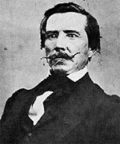

|

|

|
|
|
Rear Admiral for the Confederate States of America,
lawyer, historian and newspaper editor, Raphael Semmes is
best known for his stewardship of the famed cruiser Alabama.
Born on September 27, 1809 in Charles County, Maryland,
Semmes attended the Charlotte Hall Military Academy.
Appointed as a Midshipman in the U.S. Navy in 1826, he found
time between service in the Mediterranean and Caribbean seas
to study law and was admitted to the bar in 1834.
Semmes moved from Maryland to Cincinnati, where he
married and began his family of six children. He served in
the Mexican War of 1846, and later published a popular
account of the event. Semmes and his family moved to
Alabama, where he had bought property. When the war began,
he resigned from the U.S. Navy and offered his services to
President Jefferson Davis. His first assignment was to go
north and buy supplies and ammunition from stores in New
England and New York. Mission accomplished, he dropped in to
view President Abraham Lincoln's inauguration in Washington
D.C.
Commissioned a commander in the CSA Navy, Semmes outfitted
the cruiser Sumter in New Orleans and began
an eighteen-month stint as a commerce raider running the
Yankee blockade. After great success, Semmes traveled
overseas to take command of the CSS Alabama, one of the
rebel ships built in Liverpool, England. Sleek, fast, and
powerful, the Alabama destroyed or captured sixty-nine
vessels before it was destroyed by the Union's
Kearsarge off the coast of France in late spring of
1864. After a dramatic rescue at sea, Semmes returned home a
hero, and commanded the James River Squadron until the end
of the war. Semmes applied for, and received a presidential
pardon in May of 1865, but was arrested on piracy charges on
his return to Mobile, Alabama. Cleared of all charges,
Semmes worked as a judge, a teacher, a newspaper editor and
a lawyer. An accomplished writer, he published his story,
Memoirs of Service: Afloat during the War Between the
States in 1868.
Raphael Semmes died on August 30, 1877 in Point Clear,
Alabama.
Source: Joan Waugh, ed., Facts on File Encyclopedia of American
History: Civil War and Reconstruction, 1856 to 1869 (New York: Facts on
File, 2003), 313.
|